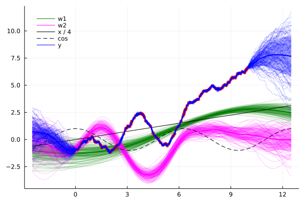

Time-Varying Bayesian Linear Regression

You are seeing the HTML output generated by Documenter.jl and Literate.jl from the Julia source file. The corresponding notebook can be viewed in nbviewer.
using AbstractGPs
using ColorTypes
using FixedPointNumbers
using Plots
using Random
using SthenoDefine and inspect our model
g1 and g2 are time-varying basis functions. In a real application, these might be specified by data.
w1 and w2 are the time-varying basis functions for these bases, specified by slowly varying GPs.
f is the prediction of the regressor.
y is the addition of f and rough temporally-correlated "noise".
f = @gppp let
g1 = x->x / 4
g2 = cos
w1 = stretch(GP(SEKernel()), 0.2)
w2 = stretch(GP(SEKernel()), 1)
f = g1 * w1 + g2 * w2
y = f + 0.3 * GP(Matern12Kernel())
end;Sample from the prior from plotting and for conditioning.
rng, N, Nplot, S = MersenneTwister(123456), 250, 500, 100;
x = GPPPInput(:y, sort(rand(rng, N) * 10));
ŷ = rand(rng, f(x));Compute the posterior.
f′ = posterior(f(x), ŷ);Sample from the posterior and write to file.
xp_ = range(-2.5, stop=12.5, length=Nplot);
xp_w1 = GPPPInput(:w1, xp_);
xp_w2 = GPPPInput(:w2, xp_);
xp_y = GPPPInput(:y, xp_);Generate joint posterior samples.
xp = BlockData(xp_w1, xp_w2, xp_y);
f′_xp = rand(rng, f′(xp, 1e-9), S);
w1′s, w2′s, y′s = split(xp, f′_xp);Plot results
gr();
posterior_plot = plot(
legend=:topleft,
legendfont=Plots.Font(
"sans-serif",
10,
:hcenter,
:vcenter,
0.0,
RGB{Normed{UInt8, 8}}(0.0,0.0,0.0)
),
background_color_legend=RGBA(1, 1, 1, 0),
foreground_color_legend=RGBA(1, 1, 1, 0),
);Plot posterior over w1.
plot!(posterior_plot, xp_, f′(xp_w1); color=:green, label="w1");
plot!(posterior_plot, xp_, w1′s; color=:green, label="", linewidth=1, alpha=0.2);Plot posterior over w2.
plot!(posterior_plot, xp_, f′(xp_w2); color=:magenta, label="w2");
plot!(posterior_plot, xp_, w2′s; color=:magenta, label="", linewidth=1, alpha=0.2);Plot x1 and x2
plot!(posterior_plot, xp_, (x->x / 4).(xp_);
linecolor=:black,
linewidth=1.0,
label="x / 4",
);
plot!(posterior_plot, xp_, cos.(xp_);
linecolor=:black,
linewidth=1.0,
linestyle=:dash,
label="cos",
);Plot samples against which we're regressing.
scatter!(posterior_plot, x.x, ŷ;
markercolor=:red,
markershape=:circle,
markerstrokewidth=0.0,
markersize=4,
markeralpha=0.7,
label="",
);Plot posterior over y.
plot!(posterior_plot, xp_, f′(xp_y); color=:blue, label="y");
plot!(posterior_plot, xp_, y′s; color=:blue, label="", linewidth=1, alpha=0.2);
posterior_plot
This page was generated using Literate.jl.